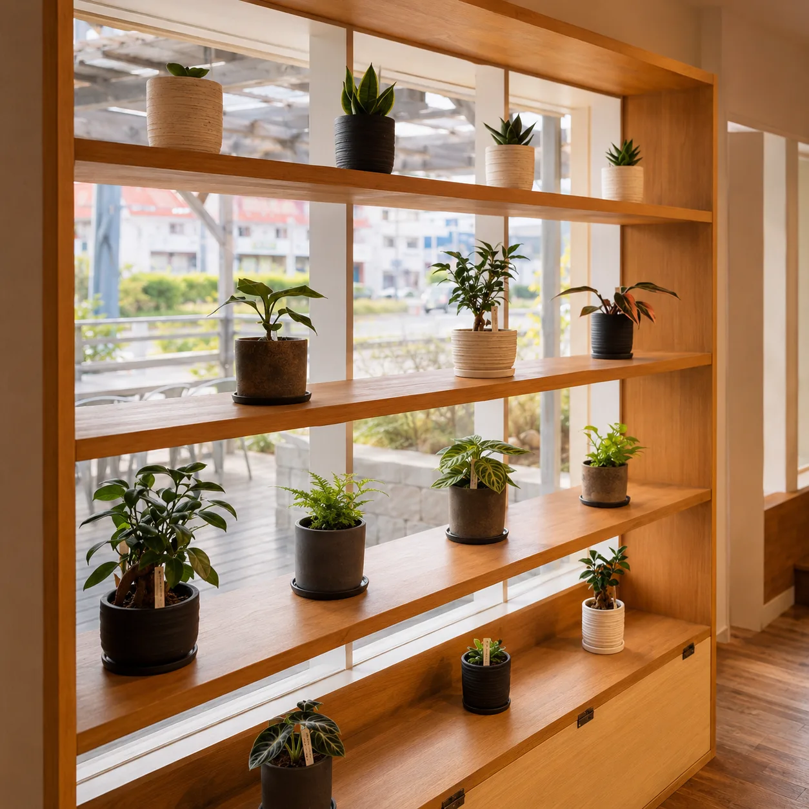
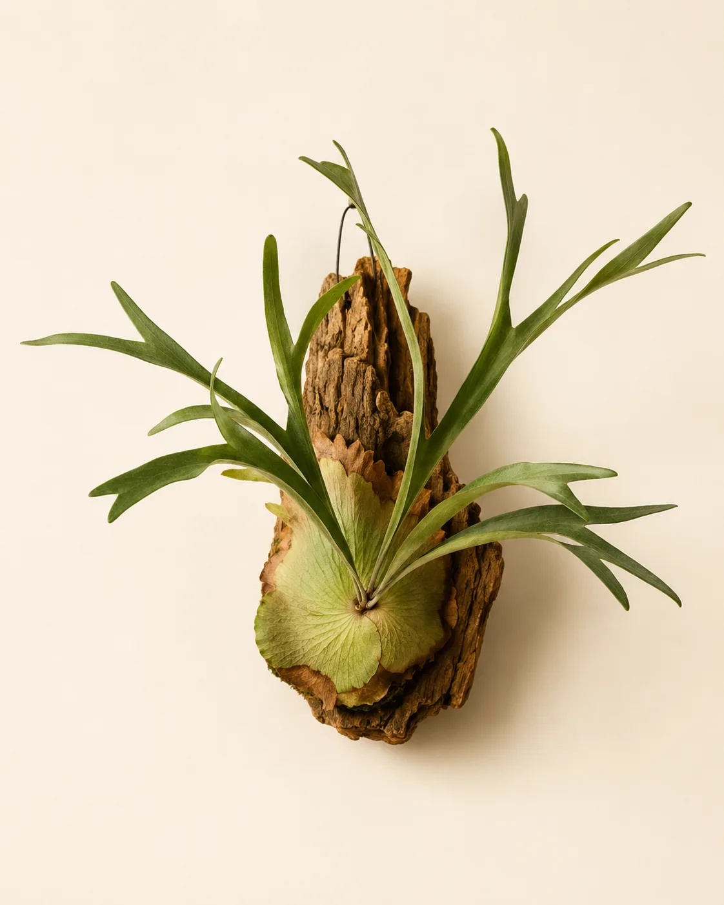

HYGGE（ヒュッゲ）熊本とは｜南区幸田の観葉植物と北欧雑貨のお店

「ヒュッゲ 熊本」で調べてこのページに来た方へ。この記事では、熊本市南区幸田にある観葉植物と北欧雑貨のお店HYGGE（ヒュッゲ）について、扱っているもの・場所と駐車場・営業日・支払い方法・来店前に知っておきたいことをまとめました。
HYGGE（ヒュッゲ）熊本はどんなお店？
HYGGE（ヒュッゲ）は、熊本市南区幸田にある観葉植物と北欧雑貨のセレクトショップです。正式な店名は「HYGGE PLANTS & ZAKKA（ヒュッゲ プランツ アンド ザッカ）」。おうち工房の中にあるお店で、植物と雑貨を同じ空間で見ながら選べます。
店内には、バイヤーが全国から選んだ観葉植物と、手仕事の温もりを感じる雑貨が並んでいます。希少な品種から育てやすい定番の品種まで幅があるので、初めて植物を育てる方にも、好みの品種を探している方にも見ていただけます。
植物も雑貨も、ひとつひとつ表情が違うものが中心です。同じ種類の植物でも、葉の形や枝ぶりはそれぞれ。写真では伝わりにくい大きさや質感を、実物を前にしてじっくり見比べられるのが、お店で選ぶいちばんの楽しさです。

「ヒュッゲ 熊本」で探すと別のお店も出てくる？
「ヒュッゲ」はデンマーク語で、居心地のよい時間や空間を表す言葉です。家族や友人とくつろぐひとときや、キャンドルの灯りのもとでお茶を飲むような、ほっとする時間を指して使われます。熊本県内には、同じ名前の飲食店やサウナ施設などもあります。私たちHYGGEは、それらとは別のお店です。
検索や地図アプリで探すときは、次のどれかで調べると見つけやすくなります。
- 「HYGGE PLANTS & ZAKKA」と英語の店名で検索する
- 「ヒュッゲ 観葉植物 熊本」「ヒュッゲ 南区」のように、扱っているものや地域を足す
- 住所（熊本市南区幸田1丁目7-15）を地図アプリに入れる
お店の地図は、トップページの店舗情報からも開けます。
どんなものが買える？植物・雑貨・照明・DIY用品
扱っているものは、大きく分けて4つです。
- 植物：ビカクシダ（コウモリラン）、アンスリウム、モンステラ、フィカス（ゴムの木の仲間）、ガジュマル、チランジア（エアプランツ）、多肉植物、苔玉など
- 雑貨：鉢・鉢カバー、プランター、器やマグ、コーヒー用品、フレグランス、インテリア小物など
- 照明：ペンダントライトやテーブルランプなど、空間の雰囲気をつくるもの
- DIY用品：おうち工房ならではの、シェルフ・ブラケット・バーなど、DIYを楽しくするアイテム
植物と鉢カバーを同じお店で選べるので、「この植物にはどの鉢が合うか」を、その場で合わせながら決められます。
在庫は日によって入れ替わります。ホームページに載せている商品は一例で、来店した日に同じものがあるとは限りません。お目当ての植物や雑貨がある場合は、来店前にLINEかお電話で確かめてください。LINEの友だち追加は、トップページのよくあるご質問の下にあります。
お店で一鉢を選ぶときのコツは？
実物を前にすると、つい見た目だけで決めたくなります。長く楽しむためには、次の3つを先に考えておくと選びやすくなります。
- 置き場所の明るさ：窓辺の明るい場所か、窓から離れた少し暗めの場所か
- 置き場所の広さ：床に置くか、棚や机の上に置くか、吊るして飾るか
- お世話にかけられる時間：土の乾き具合をこまめに確かめられるか、留守がちか
明るい窓辺があるならフィカスやモンステラ、棚の上に小さく飾りたいならチランジアや多肉植物、壁や天井から吊るして楽しみたいならビカクシダや吊り下げの苔玉、というように、置き場所から候補を絞ると迷いにくくなります。留守がちで水やりの間があきやすい方は、乾燥に比較的強いサンスベリアや多肉植物などから相談してみるのもひとつの方法です。ただ、置き場所の明るさが足りるかどうかは植物によって違い、同じ種類でも株ごとに大きさや育ち方が変わります。迷ったら、置きたい部屋の明るさや窓の向き、広さをスタッフに伝えて一緒に考えてもらうのが近道です。置きたい場所をスマートフォンで撮ってきていただくと、話が早く進みます。
買うときは、葉の色つやがよいか、新しい葉が出てきているか、葉の裏や茎に虫がついていないかも、さっと見ておきましょう。
場所・行き方・駐車場は？
お店の場所は、熊本市南区幸田1丁目7-15です。おうち工房の中にあるので、地図アプリやカーナビでは住所か「おうち工房」で探すと迷いにくくなります。
駐車スペースがあり、お車で来店できます（おうち工房と共用です）。
大きめの植物を買う予定の方は、鉢を含めた高さと幅が車に収まるかを、来店前に確かめておいてください。背の高い植物は、倒して積むと葉や枝が折れることがあります。
- 植物の高さと、車の荷室や後部座席の広さをおおまかに測っておく
- 鉢が倒れないよう、段ボールや毛布などで支えられるものを用意する
- 夏は車内に置いたままにせず、冬は冷たい外気に長く当てないようにする
熊本は夏の車内がかなり暑くなり、冬は明け方から朝にかけて冷え込みます。持ち帰りの途中で寄り道をせず、まっすぐお部屋に運んであげるのがおすすめです。冬の置き場所については冬の観葉植物の管理もあわせてご覧ください。
営業日・支払い・取り置きは？
- 営業時間：11:00〜17:00
- 定休日：水曜日・土曜日
- 電話：096-285-9061
土曜日がお休みなので、週末に来店する場合は日曜日を選んでください。
お支払いは、現金のほか、クレジットカードとQRコード決済が使えます。
- クレジットカード：VISA、Mastercard、American Express、JCB、Diners Club、DISCOVER
- QRコード決済：PayPay、楽天ペイ、au PAY、d払い、メルペイ、WeChat Pay、Alipay+
来店前に確認しておきたいことも、まとめておきます。
- 取り置き：行っていません。気になる商品はお早めにご来店ください
- 配送：行っていません。大きな植物も、店頭でのお渡しになります
- オンラインショップ：準備中です。当面は店頭でのご購入になります
ワークショップも開催しています。日程や内容は、LINEやホームページのイベント情報でお知らせしていきます。

まとめ
HYGGE（ヒュッゲ）熊本は、熊本市南区幸田のおうち工房の中にある、観葉植物と北欧雑貨のお店です。県内にある同じ名前の飲食店などとは別のお店なので、探すときは「HYGGE PLANTS & ZAKKA」や住所で調べると見つけやすくなります。
営業は11:00〜17:00、水曜日と土曜日がお休みです。駐車スペースがあり、お車で来店できます。在庫は日によって変わるので、お目当てがある方は来店前にLINEかお電話でどうぞ。熊本で観葉植物を買うお店の選び方は熊本で観葉植物を買うならどこ？でも紹介しています。
よくある質問
- 雑貨だけを見に行ってもいいですか？
- もちろんです。植物と同じ店内に、器やコーヒー用品、フレグランス、インテリア小物などの雑貨が並んでいます。植物を買う予定がなくても、気軽にお立ち寄りください。
- 植え替え用の鉢や、鉢カバーも買えますか？
- 鉢・鉢カバーやプランターも扱っています。今お持ちの植物に合わせたい場合は、鉢の直径と高さを測ってくるか、写真を撮ってきていただくとサイズを合わせやすくなります。
- 贈り物の植物を選ぶとき、何を伝えればいいですか？
- 贈る相手の置き場所の明るさや広さが分かれば、それを伝えてください。分からない場合は、お祝いの場面と、持ち帰れる大きさを伝えていただくと選びやすくなります。贈り物向けの選び方はこのブログの「開店祝い・新築祝いに贈る観葉植物」の記事でも紹介しています。
- 買った植物の育て方は、どこで調べられますか？
- このブログで、ガジュマルやモンステラ、ゴムの木などの育て方や、熊本の冬の管理を紹介しています。分からないことがあれば、LINEやお電話でもお気軽にご相談ください。
HYGGE（ヒュッゲ）のお店
観葉植物と北欧雑貨のお店です。実物を見て選びたい方は、お気軽にお立ち寄りください。
熊本市南区幸田1丁目7-15／11:00〜17:00（水・土定休）／駐車スペースあり